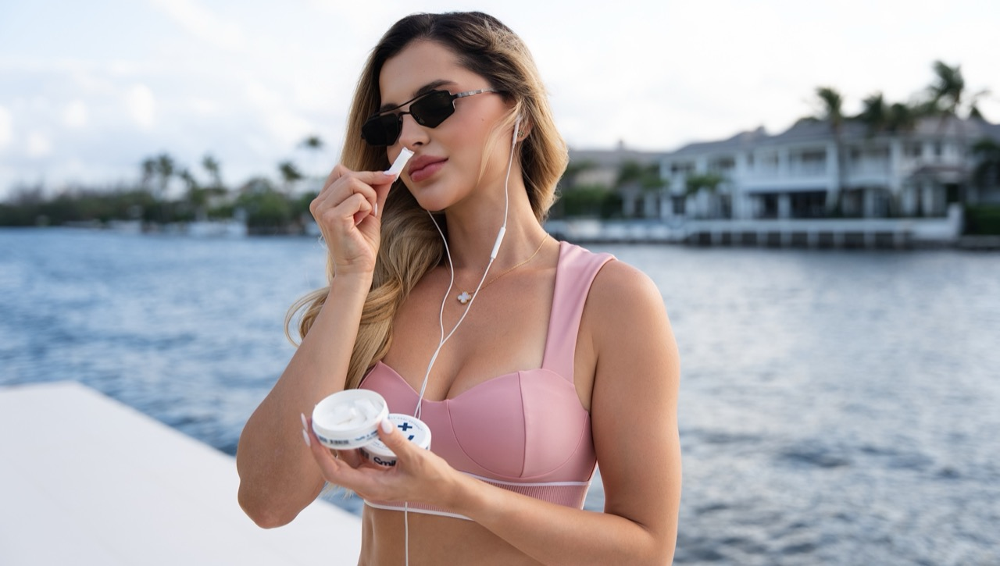

The Teeth Whitening Pouch That Went Viral on X
After Dr. Ben Braddock mentioned Smile+ in a viral post, thousands of people discovered a new way to whiten between brushing.
It started with a screenshot in my group chat
It was a Tuesday night, and my phone lit up with a message from a friend who almost never sends me anything. Just a screenshot of an X post and four words: 'have you seen this?' I opened it half-expecting another meme. Instead I was staring at a tweet about a small tin of oral-care pouches that had somehow racked up over a million views.
The account belonged to Dr. Ben Braddock, a science-leaning voice on X who posts about health, biology, and the little things people overlook in their daily routines. He wasn't running an ad. He wasn't tagged in a partnership. He had just noticed a product called Smile+ and shared what he thought of it. By the time I scrolled to the replies, thousands of people were asking the same question I was already typing: where do I get one?
The medicine cabinet graveyard
If you've ever tried to whiten your teeth at home, you already know the drill. The strips that slide around and leave your gums throbbing. The LED trays that promise Hollywood results and mostly just drool blue light onto your chin. The charcoal powders that stain your sink black and do nothing measurable to your smile. The mouthwashes that burn on the way in and leave a chemical aftertaste for hours.
My bathroom drawer looked like a museum of good intentions. Three half-empty boxes of strips. A whitening toothpaste that tasted like chalk. A little wand with a brush that dried up two weeks after I bought it. All of it added up to hundreds of dollars, and my smile in photos still looked exactly the way it did when I started.
The worst part wasn't the money. It was the feeling of being the person who kept falling for it. Every new product felt like a small confession that I hadn't figured this out yet. I started closing my mouth in pictures. I started rehearsing tight-lipped smiles on Zoom calls. I told myself it didn't matter, and then I'd catch my reflection in a car window and feel it matter all over again.
The professional route was always sitting there as the obvious answer. Book the dentist, write a check for several hundred dollars, sit under the light for an hour. But that felt like admitting defeat. And also, honestly, it felt like a maintenance treadmill I didn't want to step onto.
The 16-hour gap nobody talks about
Here is the part that stopped me when I read Dr. Braddock's original post. Most of us brush for two minutes in the morning and two minutes at night. Four minutes total. That leaves more than sixteen hours a day when nothing is protecting your teeth from coffee, food, dry mouth, and everything else.
I had never thought about my mouth that way. I thought brushing was a task you completed. Do it, be done, move on. But if you actually do the math, most of your day is spent in the aftermath of your last cup of coffee, waiting for the next brushing session to reset things.
That framing did something to me. It made every cup of coffee feel a little different. It made the afternoon slump feel less like a taste issue and more like an oral-care issue I had never been given a tool to fix.
A dentist-adjacent science account found us. Then X did its thing.
Dr. Ben Braddock posted about Smile+ after noticing the nano-hydroxyapatite whitening pouches. The post reached over 1 million views, received more than 19,000 likes, and was bookmarked more than 7,000 times.
When people asked for the link, he posted it. That was the whole arc. No affiliate code. No coupon. No paid partnership. Just a post, an audience that got curious, and a comment section that turned into a small stampede.
Disclaimer: Dr. Braddock's post was not sponsored. He has stated publicly that he has no relationship with Smile+.
So what is Smile+, exactly?

Smile+ is not gum. It is not a strip. It is not a nicotine pouch. It is an oral-care pouch designed to sit comfortably between your lip and your gum while nano-hydroxyapatite works on the surface of your teeth.
You place one in your mouth, let it rest for ten to twenty minutes, and go about your day. No sink. No brush. No routine to interrupt. It is engineered for the hours you would otherwise spend doing nothing about your smile.
The formulation is deliberately clean. No peroxide burn. No messy strips. No nicotine and no tobacco. Fresh mint taste. Designed for daily use. Each tin contains 15 pouches and is manufactured in an NSF-certified, cGMP facility in the USA.
The ingredient behind the buzz: nano-hydroxyapatite
Hydroxyapatite is the primary mineral that makes up tooth enamel. Nano-hydroxyapatite is a tiny-particle form of that same mineral, used in modern oral care to help support the tooth surface and improve the look of enamel.
Instead of bleaching with peroxide, Smile+ uses nano-hydroxyapatite to support a smoother, brighter-looking smile over time. Each pouch contains 55mg of nano-hydroxyapatite, along with xylitol, aloe vera, and a pH-neutral base with active mint flavoring.
That's the mechanism. It is not a bleach. It is not a strip. It is an enamel-supporting ingredient meeting your teeth for ten to twenty minutes at a time, in a format you can use while you answer emails, drive to work, or sit through a meeting.
Free Shipping · 30-Day Guarantee · Secure Checkout
Because your teeth do not stop needing care after you brush
Most people brush for two minutes, twice a day. That leaves 16+ hours where coffee, food, dry mouth, and daily habits can work against your smile.
Smile+ gives you a simple way to add oral-care time between brushing without another rinse, strip, or messy routine. Post-coffee. Pre-meeting. After lunch. Before a date. During a long drive. Any of the small moments that used to just be waiting.
Smile+ was designed for the time between brushing. That is the whole idea.
What the first month actually looked like
I ordered a five-tin bundle because I figured if the idea had any legs at all, I wanted to give it a real runway. The tin arrived a few days later. The packaging felt more like a piece of hardware than a supplement bottle. Matte, solid, clean.
The first pouch was a small novelty. Mint. Cool. Not overwhelming. I placed it between my lip and gum after my morning coffee, set a timer, and went about answering emails. When the timer went off, I barely noticed I had been using it.
By the second week, it had become a reflex. Coffee, pouch. Lunch, pouch. Before a call where I knew I'd be on camera, pouch. It didn't feel like a routine. It felt like a small upgrade I kept giving myself throughout the day.
By week four, the mirror moment happened in reverse. I caught my reflection in the same car window I had been avoiding for months, and my smile looked lighter. Not blinding. Not fake. Just cleaner. The kind of difference you notice, but a coworker might not comment on for another few weeks.
"I've tried the strips, the LED thing, the charcoal stuff. This is the first thing I've stuck with past week two because it doesn't ask me to do anything different. I just use it after my coffee."Marcus · 34, daily coffee drinker
It isn't just me. The comments section basically wrote itself.
Scroll under the original viral post and you'll see the same story repeating in a hundred variations. People asking if it's real. People asking where to buy it. People coming back a week later to say they'd ordered a tin. People coming back a month after that to say they were on their second.
The pattern is not accidental. When a product finds a small pocket of people it actually fits, they tend to tell each other.
"The mint taste is genuinely good and it doesn't burn like whitening strips did. I don't have to think about it. I just pop one in after lunch."Priya · 29, uses one pouch after meals
Addressing the obvious skepticism
If you're reading this thinking 'sure, another whitening product on the internet,' you are not being cynical. You are being reasonable. The category has trained you to be. I was you three months ago.
So here is what I can tell you plainly. Smile+ is not a bleach. It will not deliver overnight, blinding-white results, and it doesn't try to. It is a between-brushing pouch that uses nano-hydroxyapatite to help support enamel and help teeth look whiter over time. It is not a replacement for brushing and flossing. It is the thing that goes in the sixteen-hour gap where you used to have nothing.
If you are looking for a peroxide-based, dentist-office-intensity treatment, this is not that. If you are looking for something you can genuinely use every day without pain, mess, or a new routine, this is worth trying.
"I was ready to hate it. I've been burned by every whitening product on the shelf. But it's honestly the easiest thing I've added to my day, and my teeth look better in photos."Jordan · 41, previously tried strips and LED kits
Back to that group chat
A few weeks ago, I sent the same screenshot to a different friend. Just the viral post and four words: 'have you seen this?' She wrote back almost immediately. She had. She'd already ordered.
That is basically how this whole thing has moved. One person notices. They tell one other person. That person notices something in the mirror a month later and tells someone else. There is no ad campaign that beats that kind of quiet momentum.
If your smile has been sitting on your list of things to eventually deal with, this is a low-friction way to actually deal with it. No strips. No peroxide. No sensitivity. Just a pouch you use between brushing, made in the USA in an NSF-certified facility, with 15 pouches per tin.
Try Smile+ Daily Whitening. See what a month between brushing can do.
The same group chat, weeks later. A different screenshot. A different friend. Same four words. 'Have you seen this?' The answer, this time, is yes. She already ordered.
Free Shipping · 30-Day Guarantee · Secure Checkout